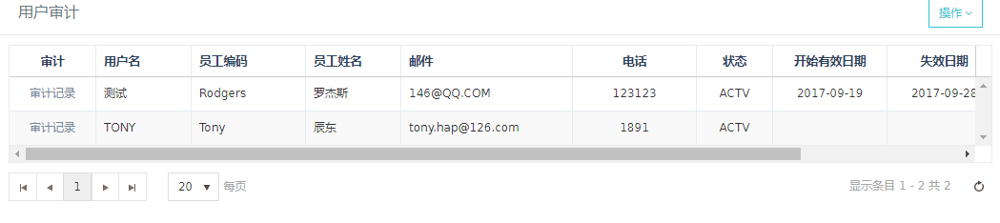
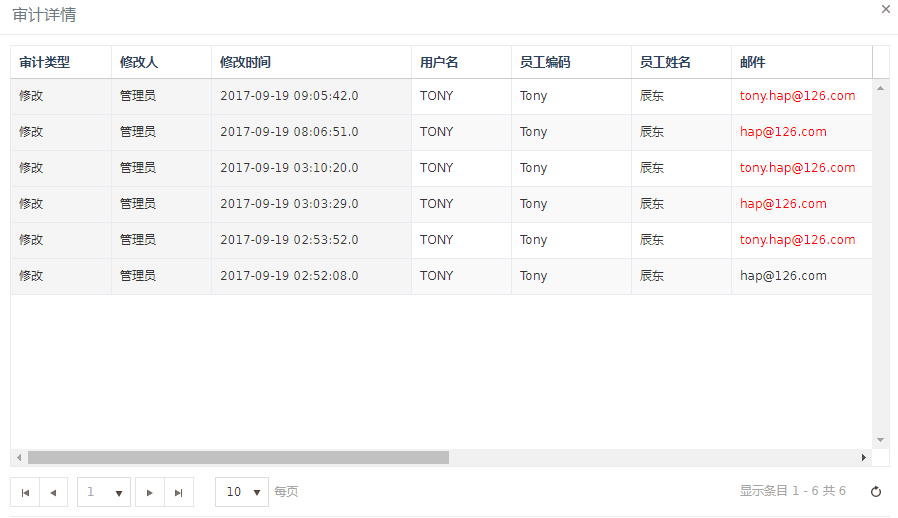
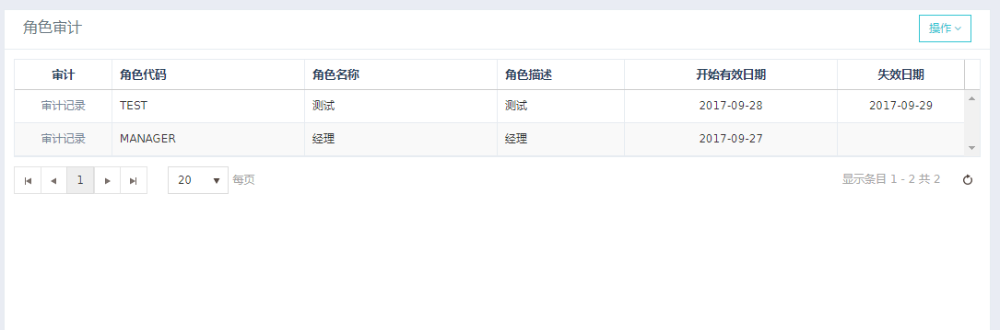
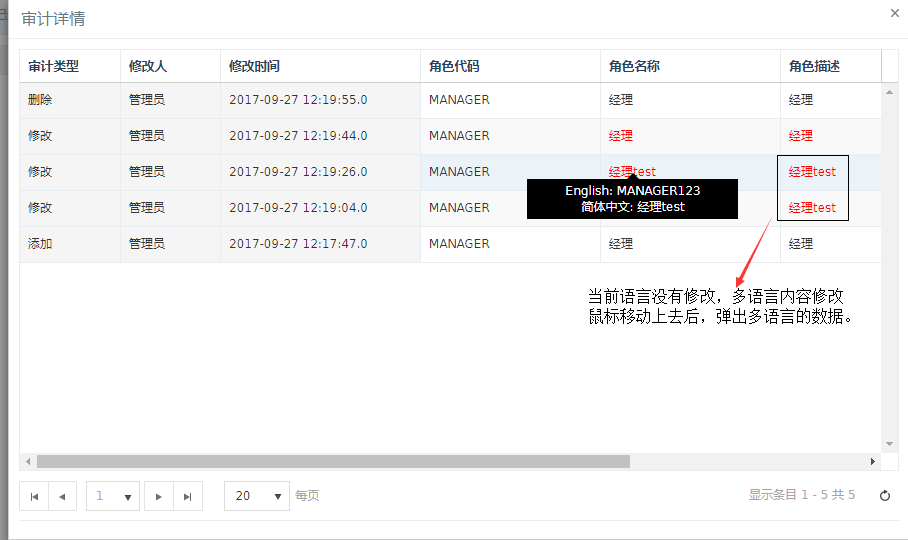

审计
HAP 支持在代码级别记录用户对指定表的操作记录.
操作包括 : 插入, 更新, 删除.
暂时只针对单表操作有效.
1. 代码准备
在代码层面, 有一个注解 AuditEnabled
AuditEnabled
这个注解加在 DTO 类上, 表示这个 DTO 代表的 表需要开启审计功能.
@Table("SYS_USER")
@AuditEnabled
public class User {
...
}
2. 表结构
所有需要开启审计功能的表, 需要有一个与之相对应的 审计表.
命名规则 : 基表名_a
可以在 AuditEnabled 注解中通过参数 auditTable 来指定.
这个规则可以 实现接口
IAuditTableNameProvider来自定义.
实现类需要定义为 spring bean
审计表字段包含所有字段, 但不包含基表的唯一索引, 主键约束等
另外必须包括审计专用字段:
audit_id(varchar(80)) 主键(uuid)audit_transaction_type(varchar (10)) 审计操作(insert,update,delete)audit_timestamp(datetime) 审计时间audit_session_id(varchar(64)) 审计 session idaudit_tag(nummber(1)) 标记是否为最新快照lang(varchar(20)) 操作时系统语言
3 基本原理
AuditInterceptor 会拦截所有的 Mybatis 通过 dto 执行的操作,
用 dto 上的 AuditEnabled 注解 来决定是不是要执行 审计操作.
如果需要执行, 则动态生成 SQL 语句, 完成对新记录的备份 操作.
审计表名称是通过DTO上@AuditEnabled注解中的auditTable值获取,若为空，则使用DTO上
@Table注解中的name值 + "_a".
另：支持参数为Map，但需有一个key为小写dto.
插入,更新 执行的操作是 先操作, 后记录.删除 执行的操作是 先记录, 后操作.
也就是说, 审计表中插入的都是最新的快照.
基于这个原理的审计, 只能做到行级的记录, 无法具体到字段级.
但是结合一定的比较手段, 可以知道, 某次修改, 到底修改了哪些字段.
4 支持SQL类型
- oracle/mysql/sqlserver支持单表审计
- oracle/mysql/sqlserver支持SQL含where条件子查询（操作表必须有别名）审计
- oracle/mysql/sqlserver支持单表多语言审计
5 审计开发流程
（1） 单语言
controller层
- 注入Service，指定Service名称
@Autowired
@Qualifier("auditUserServiceImpl") // 注入Service
private IAuditRecordService auditUserService;
/**
* 查询审计的用户记录
* @param page
* @param pageSize
* @return
*/
@PostMapping("/sys/audit/user/query")
@ResponseBody
public ResponseData queryAuditUser(HttpServletRequest request,
@ModelAttribute User user,
@RequestParam(defaultValue = DEFAULT_PAGE) int page,
@RequestParam(defaultValue = DEFAULT_PAGE_SIZE) int pageSize){
IRequest iRequest = createRequestContext(request));
return new ResponseData(auditUserService.selectAuditRecord(iRequest, user, page, pageSize));
}
/**
* 审计用户的详细审计记录
* @return
*/
@PostMapping("/sys/audit/user/{uid}/detail")
@ResponseBody
public ResponseData queryAuditUserDetail(HttpServletRequest request,
@RequestParam(defaultValue = DEFAULT_PAGE) int page,
@RequestParam(defaultValue = DEFAULT_PAGE_SIZE) int pageSize,
@PathVariable long uid){
IRequest iRequest = createRequestContext(request));
//封装为DTO 可条件查询
User user = new User();
user.setUserId(uid);
return new ResponseData(auditUserService.selectAuditRecordDetail(iRequest, user, page, pageSize));
}
service层
- 指定Service名称，实现IAuditRecordService接口
@Service("auditUserServiceImpl")
public class AuditUserSericeImpl implements IAuditRecordService{
@Autowired
AuditUserMapper userMapper;
@Override
public List<Map<String, Object>> selectAuditRecord(IRequest iRequest, BaseDTO dto, int page, int pageSize) {
// 分页
PageHelper.startPage(page, pageSize);
return AuditRecordUtils.operateAuditRecord(userMapper.selectAuditUser((User) dto));
}
@Override
public List selectAuditRecordDetail(IRequest iRequest, BaseDTO dto, int page, int pageSize) {
// 分页
PageHelper.startPage(page,pageSize);
return AuditRecordUtils.operateAuditRecordSingleDetail(userMapper.selectAuditUserDetail((User) dto));
}
}
Mapper层
/**
* 用户审计
* @return
*/
List<Map<String, Object>> selectAuditUser(User user);
List<Map<String, Object>> selectAuditUserDetail(User user);
<!-- 审计查询公共字段 A: 审计表 B：employee表-->
<sql id="common">
SELECT
A.AUDIT_ID,
A.AUDIT_TIMESTAMP,
A.AUDIT_TRANSACTION_TYPE,
A.LANG,
A.OBJECT_VERSION_NUMBER,
B.NAME AS LAST_UPDATED_BY,
</sql>
<!-- 用户审计 -->
<sql id="userPart">
A.USER_ID,
A.USER_NAME,
A.EMPLOYEE_ID,
C.NAME AS EMPLOYEE_NAME,
C.EMPLOYEE_CODE AS EMPLOYEE_CODE,
A.EMAIL,
A.PHONE,
A.STATUS,
A.START_ACTIVE_DATE,
A.END_ACTIVE_DATE,
A.DESCRIPTION
FROM
SYS_USER_A A
LEFT OUTER JOIN HR_EMPLOYEE C ON A.EMPLOYEE_ID = C.EMPLOYEE_ID,
HR_EMPLOYEE B
WHERE B.EMPLOYEE_ID = A.LAST_UPDATED_BY
</sql>
<select id="selectAuditUser" parameterType="com.hand.hap.account.dto.User" resultType="java.util.Map" >
<include refid="common" />
<include refid="userPart" />
AND (A.LANG = #{request.locale,jdbcType=VARCHAR,javaType=java.lang.String}
OR A.LANG is NULL )
AND A.AUDIT_TAG = 1
ORDER BY
A.AUDIT_TIMESTAMP DESC
</select>
<select id="selectAuditUserDetail" parameterType="com.hand.hap.account.dto.User" resultType="java.util.Map" >
<include refid="common" />
<include refid="userPart" />
AND A.USER_ID = #{userId}
AND B.EMPLOYEE_ID = A.LAST_UPDATED_BY
AND (A.LANG = #{request.locale,jdbcType=VARCHAR,javaType=java.lang.String}
OR A.LANG is NULL )
ORDER BY A.AUDIT_TIMESTAMP DESC
</select>
审计页面
- 页面字段与实际页面字段一致。
审计详情页面
- 引入common.js
- 必要字段：审计类型、修改人，修改时间。
- 调用dealAuditSingleLanguageData(data)。
<script src="${base.contextPath}/resources/js/audit/common.js"></script>
// kandoUI Grid 调用dealAuditSingleLanguageData
{
field: "employeeName",
title: '<@spring.message "employee.name"/>',
width: 100,
sortable: false,
template : function(rowdata) {
return dealAuditSingleLanguageData(rowdata.employeeName);
}
},
界面显示


（2） 多语言
Cnotroller层
- 与单语言Controller 类似
service层
- 指定Service名称，实现IAuditRecordService 接口
@Service("auditRoleServiceImpl")
public class AuditRoleServiceImpl implements IAuditRecordService {
@Autowired
AuditRoleMapper roleMapper;
@Autowired
private ILanguageProvider languageProvider;
@Override
public List<Map<String, Object>> selectAuditRecord(IRequest iRequest, BaseDTO dto, int page, int pageSize) {
PageHelper.startPage(page, pageSize);
return AuditRecordUtils.operateAuditRecord(roleMapper.selectAuditRole((Role) dto));
}
@Override
public List selectAuditRecordDetail(IRequest iRequest, BaseDTO dto, int page, int pageSize) {
// 分页
PageHelper.startPage(page,pageSize);
// 分页获取AUDIT_SESSION_ID
List sessionIds = roleMapper.selectSessionId((Role) dto);
// 通过AUDIT_SESSION_ID 获取pageSize*N条记录，N为语言个数
List<Map<String, Object>> roles = roleMapper.selectAuditRoleDetail(sessionIds);
// 获取系统支持的语言
List<Language> languages = languageProvider.getSupportedLanguages();
// 处理比较pageSize*N条记录，返回pageSize条记录
List<Map<String, Map<String, String>>> result = AuditRecordUtils.operateAuditRecordMultiDetail(roles, languages);
// 由于分页器返回类型为Page,故转为分页返回的类型
for(int i = 0, j = sessionIds.size(); i < j; i++){
sessionIds.remove(i);
sessionIds.add(i, result.get(i));
}
return sessionIds;
}
}
Mapper层
/**
* 角色审计
* @return
*/
// 获取角色审计列表
List<Map<String, Object>> selectAuditRole(Role role);
// 获取AUDIT_SESSION_ID
List<Map> selectSessionId(Role role);
// 通过AUDIT_SESSION_ID 获取审计记录
List<Map<String, Object>> selectAuditRoleDetail(List list);
<!-- 获取AUDIT_SESSION_ID -->
<select id="selectSessionId" parameterType="com.hand.hap.account.dto.Role" resultType="java.lang.String">
SELECT AUDIT_SESSION_ID FROM (
SELECT DISTINCT AUDIT_SESSION_ID, LAST_UPDATE_DATE, AUDIT_TIMESTAMP
FROM SYS_ROLE_B_A
WHERE ROLE_ID = #{roleId}
ORDER BY AUDIT_TIMESTAMP DESC,
LAST_UPDATE_DATE DESC
) A
</select>
<!-- 审计查询公共字段 A: 审计表 B：employee表 -->
<sql id="common">
SELECT
A.AUDIT_ID,
A.AUDIT_TIMESTAMP,
A.AUDIT_TRANSACTION_TYPE,
A.AUDIT_SESSION_ID,
A.LANG,
A.OBJECT_VERSION_NUMBER,
B.NAME AS LAST_UPDATED_BY,
</sql>
<!-- 角色审计 -->
<sql id="queryRolePart">
A.ROLE_CODE,
A.ROLE_NAME,
A.ROLE_DESCRIPTION,
A.START_ACTIVE_DATE,
A.END_ACTIVE_DATE,
A.ROLE_ID
FROM SYS_ROLE_B_A A, HR_EMPLOYEE B
WHERE A.LAST_UPDATED_BY = B.EMPLOYEE_ID
</sql>
<select id="selectAuditRole" resultType="java.util.Map">
<include refid="common" />
<include refid="queryRolePart"/>
AND (A.LANG = #{request.locale,jdbcType=VARCHAR,javaType=java.lang.String}
OR A.LANG is NULL )
AND AUDIT_TAG = 1
ORDER BY
A.AUDIT_TIMESTAMP DESC
</select>
<select id="selectAuditRoleDetail" parameterType="java.lang.String" resultType="java.util.Map">
<include refid="common" />
<include refid="queryRolePart"/>
AND A.AUDIT_SESSION_ID IN
<foreach collection="list" index="index" item="item" open="(" separator="," close=")">
#{item}
</foreach>
ORDER BY A.AUDIT_TIMESTAMP DESC
</select>
审计页面
- 页面字段与实际页面字段一致。
审计详情页面
- 引入common.js
- 必要字段：审计类型、修改人，修改时间。
- 调用dealAuditMultiLanguageData(data, isShowMultiLanguage)。
<script src="${base.contextPath}/resources/js/audit/common.js"></script>
// kandoUI Grid 调用dealAuditSingleLanguageData
columns: [{
title: '<@spring.message "role.roledescription"/>',
width: 120,
sortable: false,
template : function(rowdata) {
return dealAuditMultiLanguageData(rowdata.roleDescription, true);
},
},...],
dataBound: function(e) {
var tooltips = $("span[name='target']").kendoTooltip({
animation: false,
width: 200,
content: function (e) {
var content = e.target.attr("tooltip-content");
while(content.indexOf("&") >= 0) {
content = content.replace("&", "<br />");
}
return content;
},
}).data("kendoTooltip");
}
界面显示
 